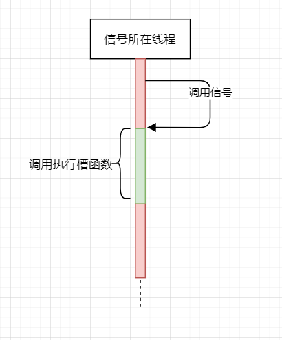
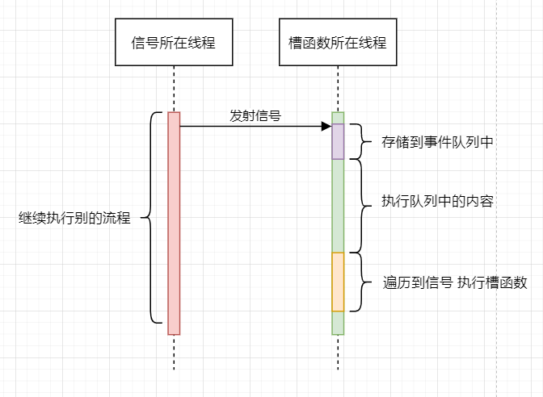
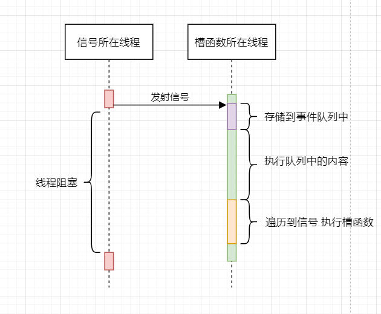

记录一下常用重载,并不是记录全部
宏形式
信号的指定必须使用宏SIGNAL(),槽函数必须使用宏SLOT(),这两个宏能把括号中的内容转换为与形参相对应的const char*形式。
在指定函数时,只能指定函数参数的类型,不能有参数名,也不能指定函数的返回类型。比如SLOT(x(int i)),是错误的,因为指定了参数名i,正确形式为SLOT(x(int))
指针形式
宏形式与指针形式的区别
1. 宏形式的SINGAL和SLOT宏实际是把该宏的参数转换为字符串,当信号和槽相关联时,使用的是字符串进行匹配,因此,信号和槽的参数类型的名字必须在字符串意义上相同,所以信号和槽无法使用兼容类型的参数,也因此也不能使用typedef或namespace的类型,虽然他们的实际类型相同,但由于字符串名字不同,从而无法使用宏形式。
2. 指针形式的信号和槽函数的参数类型不需完全一致,可以进行隐式转换。还支持typedef和命名空间。
3. 指针形式的槽函数可以不使用slots关键字声明,任意的成员函数都可以是槽函数。宏形式的槽函数必须使用slots修饰。
4. 宏形式的槽函数不受private的限制,也就是说即使槽是private的,仍可通过信号调用该槽函数,而指针形式则在使用connect时就会发生错误。
5. 当信号或槽函数有重载的形式时,使用指针形式可能会产生二义性错误,此时可使用函数指针的形式指定信号或槽函数,或者使用宏形式,如下代码所示。
选择不同的属性,槽函数执行时所在的线程也不一样,可能在主线程也可能在子线程
感觉这篇笔记和下面的连接熟悉有些关联,【本地链接】阻塞-非阻塞-同步-异步
| 枚举 | 值 | 说明 |
| Qt::AutoConnection | 0 | 自动关联 |
| Qt::DirectConnection | 1 | 直接关联,槽函数在发射信号所在的线程中执行 |
| Qt::QueuedConnection | 2 | 队列关联,信号的发射不会直接调用槽函数,而是将信号放入接收者线程的事件队列中,槽函数运行于信号接收者所依附的线程 |
| Qt::BlockingQueuedConnection | 3 | 阻塞队列关联。和Qt::QueuedConnection一样,只是信号所在线程会一直阻塞,直到槽函数返回。信号发射和对应槽函数在同一线程中,则不能使用此连接,否则应用程序将会死锁。 |
| Qt::UniqueConnection | 0x08 | 唯一关联。这是一个标志,可使用按位或与上述任何连接类型组合。当设置Qt::UniqueConnection时,则只有在不重复的情况下才会进行连接,如果已经存在重复连接(即,相同的信号指向同一对象上的完全相同的槽),则连接将失败 |
Qt::DirectConnection
Qt::QueuedConnection
Qt::BlockingQueuedConnection